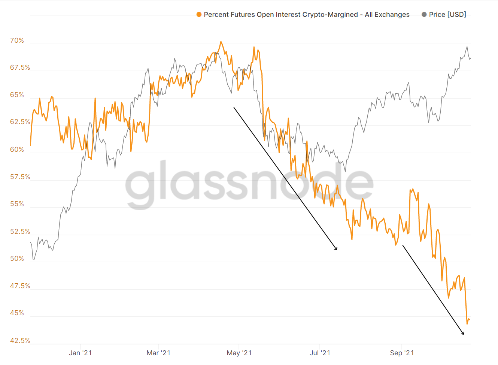
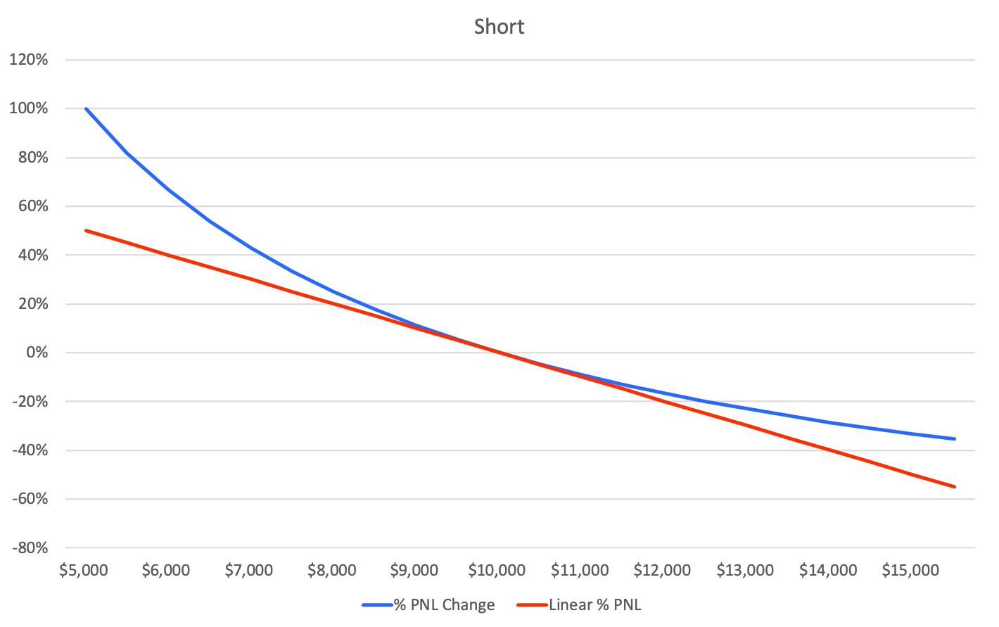
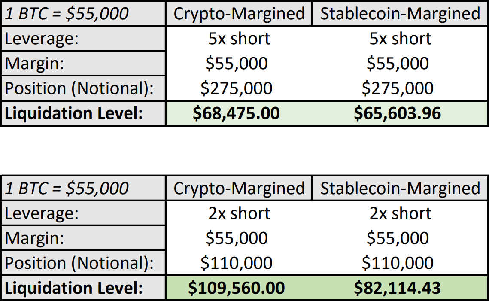
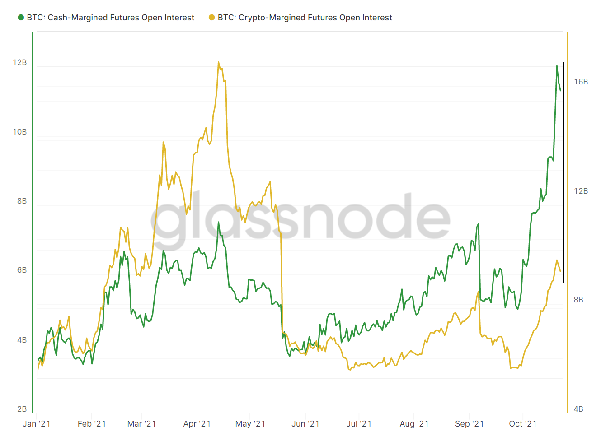
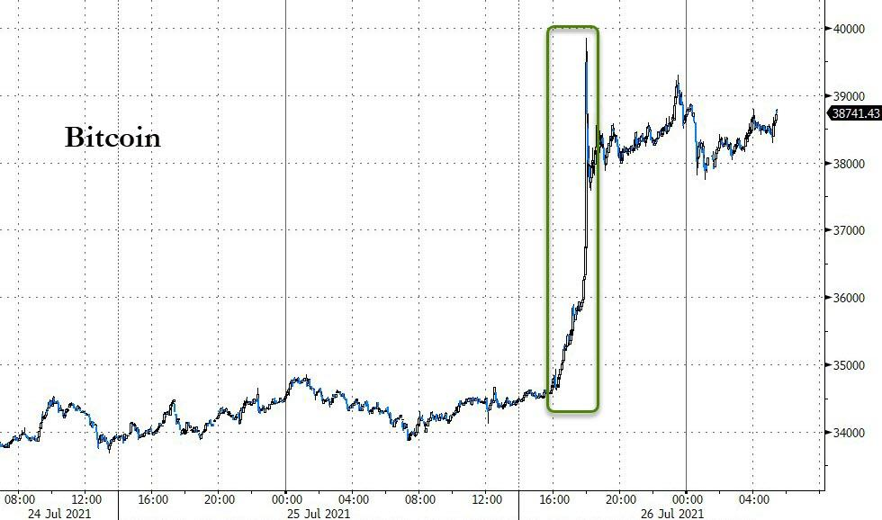

heard it here first
Posts
About
The aim of this site is to provide the best quality original analysis and information on crypto and markets, better presented in long-form than on Twitter where previous posts have enjoyed some moderate success.
Links
Bithedge TwitterContact
Direct MessageOctober 23rd, 4:55pm nyc time, 2021.
As the political discussion around stablecoins continues to rage on, one could be forgiven for not knowing how it’s played out in actual crypto markets which this month for the first time saw open interest in stablecoin-margined Bitcoin futures surpass that of their crypto-margined counterparts.
 percent of bitcoin futures open interest with crypto as margin
glassnode.com
Before stablecoins mimicked Bitcoin’s rocket to $60,000+ with their own stunning rise to over $100 billion in circulation, Bitcoin, as the most liquid and stable instrument on exchanges, was the monolithic ‘reserve asset’ of crypto trading. To avoid the restrictive on/off ramps and requirements of dealing in ‘real’ money, many participants chose to trade the ETH/BTC pair rather than the ETH/USD pair, and top up their margin balance with Bitcoin rather than dollars.
The result was (and is) an inherently convex ecosystem. Consider that when a trader buys a Bitcoin future both denominated and settled in the underlying cryptocurrency, the result is the below, where the red line is the linear payout function found in traditional futures contracts and the blue line is the nonlinear payout function found in underlying-margined contracts.
blog.bitmex.com
And for short trades:
blog.bitmex.com
Many readers will immediately notice something. While the unique ‘twists’ in the payoff of going long a crypto-margined crypto future blunt profits and increase losses, for a short in these contracts they increase profits and blunt losses. The playing field is intrinsically tilted in favor of the latter. Stablecoin-margined futures normalize this.
While this is interesting in itself the difference does not realize its full significance until liquidations are considered, at which point it becomes very significant as the largest moves behind crypto assets are often almost entirely mechanical. Consider two traders with positions leveraged long Bitcoin futures. One posts USDT as margin and one posts BTC as margin. In order to avoid liquidation, each trader needs to maintain a certain margin balance at all times.
See where this is going? In the event that Bitcoin moves lower, not only will the trader who posted it as margin see the P/L on their trade turn negative but the value of their margin will be dropping as well. In practice the effect is this:
varying liquidation levels for crypto-margined and stablecoin-margined long positions
binance.com
And while exact procedures vary across exchanges, none of them are enough to make even a dent in the fact that longs in underlying-margined futures are far more vulnerable to liquidation than longs in traditional futures. And when that is combined with the fact that shorts in underlying-margined futures are far less vulnerable to liquidation than shorts in traditional futures positions, it creates an environment naturally favoring downside. (Of course, none of this has caused anything but temporary, although violent, setbacks for the high-flying currency.)

varying liquidation levels for crypto-margined and stablecoin-margined short positions
binance.com
So in a market where futures liquidations can reach up to 90% of spot volume and stretch into the billions regularly, an upper hand to the short side adds up to a massive structural headwind for the ever-leveraged crowd of bullish crypto traders. Perhaps this is part of the reason why nearly all major deleveraging events in Bitcoin this year have been dominated by long liquidations, making the continued removal of this skew a resoundingly bullish development for the space.
glassnode.com
And following Bitcoin’s extreme dive in May the rate of the decoupling has gone nothing shy of vertical. So for a preview of what may be increasingly common in a more even market that shows no signs of stopping this current transition and in fact only speeding it up, look no further than July 26th, when an unprecedented build up of cash-margined shorts saw their first real wipe out in what was the biggest short-squeeze in crypto history.
